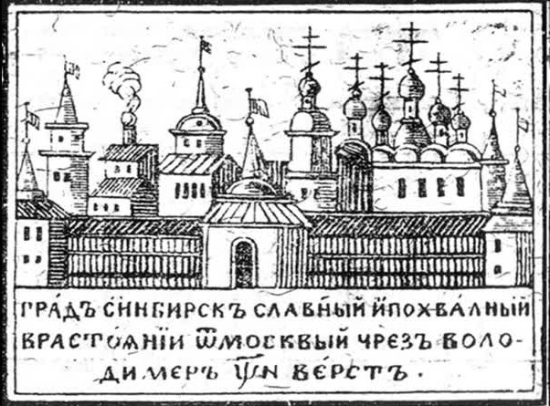
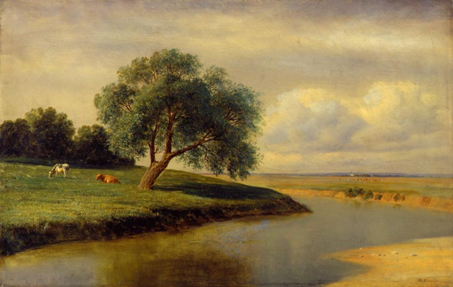
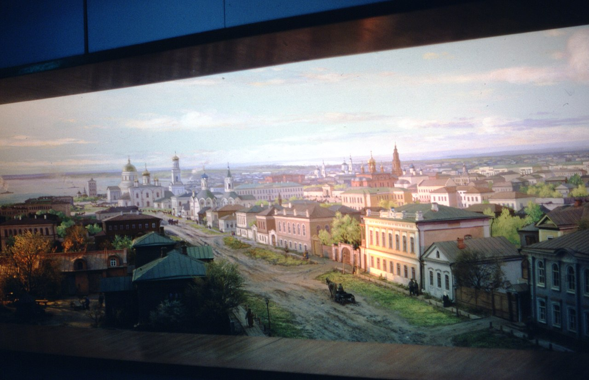

История Ульяновска.
Основание города.

Основан в 1648 году (лета 7156) «по Государеву Цареву и Великаго Князя Алексея Михайловича, всея Великия и Малыя и Белыя Росии и Самодержавца, указу», окольничим и воеводой Богданом Матвеевичем Хитрово и дьяком Григорием Кунаковым, как крепость Синбирск (позже — Симбирск), с целью защиты восточных границ Русского царства от набега кочевых племён, а также с целью колонизации богатого природными ресурсами Поволжья.Деревянный кремль был построен в 1648 году на «Венце» Синбирской горы. Это был правильный четырёхугольник, по углам и сторонам которой находились восемь башен с тремя воротами, вокруг выкопан глубокий ров. В середине крепости стоял Троицкий собор, к западной стене примыкал Спасский женский монастырь. В кремле жили воевода, дворяне, боярские дети и служилые люди. С юга и востока примыкали слободы с населением «попроще».К 1652 году город-крепость Синбирск был отстроен и вошёл в подчинение Приказа Казанского дворца.К 1654 году Синбирская засечная черта была построена и образован Синбирский уезд.В 1666 году в Синбирске полгода жила грузинская царица Елена Леонтьевна с сыном и митрополитом Епифанием.
XVII—XIX века.

Большую часть XVII—XIX веков Синбирск не играл особой роли, но во время восстания С.Разина, а так же во время событий с Е.Пугачевым он играл большую роль.
Осенью 1670 года Синбирск осаждало войско Степана Разина. Разин не смог успешно завершить осаду, 4 октября он был дважды ранен в бою, товарищи вынесли его к реке, погрузили в лодку и отплыли вниз по Волге. июне 1671 года Симбирскую крепость безуспешно осаждал ещё один разбойник — Федька Шелудяк.В 1672 году, за «двукратную храбрую оборону от разбойника Стеньки Разина: в первуй раз при воеводе Ивана Милославского от самого Стеньки Разина, а во второй раз через год от есаула разинской шайки Федьки Шелудяка», городу Синбирску, царём Алексеем Михайловичем, был пожалован первый герб. В 1678 году в Синбирске (в кремле, остроге, посаде), в 605 дворах жило 1579 человек. Указом Пётра I от 18 декабря 1708 года, в ходе административно-территориального деления Русского царства на губернии, Синбирск с уездом, вошёл в состав Казанской губернии, а 22 ноября 1717 перешел к Астраханской губернии, но в 1728 году Синбирская провинция снова была передана в Казанскую губернию. 1 октября 1774 году из Яицкого городка в Синбирск, в железной клетке, доставил пленного Емельяна Пугачёва лично Суворов Александр Васильевич. На допрос самозванца, которого допрашивали со 2 по 6 октября, из Москвы прибыли П. И. Панин и П. С. Потёмкин. 26 октября Пугачёв был отправлен из Синбирска в Москву. В 1775 году была учреждена Синбирская губерния, но город Синбирск ещё остаётся «провинциальным». 11 сентября 1780 году Синбирск переименован в Симбирск. 15 сентября 1780 года Екатеринa II сделала Симбирск стал губернским городом вновь учреждённого Симбирского наместничества, в составе 13 уездов. А 22 декабря 1780 года впервые в истории Симбирска Екатериной II, был учреждён генеральный план застройки, установлен и утверждён новый герб: «въ голубомъ полѣ, на бѣломъ 4-хъ-гранномъ пьедесталѣ, бѣлая колонна съ золотой короной наверху». В 1780 году в Симбирске проживало 10541 человек (5308 — мужского пола, 5233 — женского пола). 13 августа 1864 года произошёл страшный пожар в Симбирске, который продолжался 9 дней. От города уцелела его четвёртая часть. Здание дворянского собрания и Карамзинская библиотека в нём, Спасский монастырь, 12 церквей, почтамт, все лучшие частные строения сгорели.
XX век.

В 1916 году в Симбирске завершено строительство Императорского моста, протяжённостью 2089 метров, самого длинного на тот момент в России. 5 октября 1916 года, открылось движение поездов по Императорскому мосту, дав возможность железнодорожному сообщению Симбирск — Верхняя Часовня. 10 декабря 1917 года в Симбирске была установлена Советская власть и С 1918 года вместо Городского головы городом стали руководить первые секретари Ульяновского горкома ВКП(б)/КПСС и председатели горисполкома. Во время мятежа Муравьева(1918 года) 11 июля 1918 года в Симбирске левые эсеры под руководством командующего Восточным фронтом РККА Муравьёва М. А. выступили за создание Поволжской республики и предприняли неудачную попытку поднять мятеж. 21 июля 1918 года Симбирск был освобождён от большевиков русско-чешским отрядом белогвардейцев под командованием Каппеля — войсками КОМУЧа. 12 сентября 1918 года вновь захвачен Симбирской Железной дивизией под командованием Гая. 9 мая 1924 года, в связи со смертью Владимира Ильича Ульянова (Ленина), постановлением ЦИК СССР, Симбирск переименован в Ульяновск, Симбирская волость — в Ульяновскую волость, Симбирский уезд — в Ульяновский уезд, а Симбирская губерния — в Ульяновскую губернию. Как только жители губернии и Симбирска не предлагали переименовать город - и «Ленин», и «Ленинск», и «Ильич», но эти топонимы не нашли поддержки в Москве. И лишь предложенное крестьянами Карсунского уезда название «Ульяновск» понравилось в столице и было одобрено. После великой отечественной войны, 19 сентября 1946 года Советом Министров РСФСР был утверждён генеральный план Ульяновска, разработанный специалистами Ленгипрогор (Ленинградского государственного института по проектированию городов) архитекторами В. А. Гайковичем и Н. В. Кашкадамовой. Чуть позже были приняты два важнейших для судьбы Ульяновска постановления: «О мерах по развитию г. Ульяновска 1949–50-х гг.» и о включении Ульяновска в число 43 важнейших городов Советского Союза. Начиная с 1960-х годов, благодаря высоким темпам жилищного и промышленного строительства, Ульяновск увеличился как по площади, так и по численности населения. На месте прежних сёл, прилегавших к городу, были построены современные жилые кварталы, образовавшие 23 мая 1962 года Засвияжский, Заволжский, а из Старого города и прилегающая к нему северная часть образовали Ленинский район. 15 декабря 1983 года первым секретарём Ульяновского обкома КПСС назначен Геннадий Колбин. По его инициативе в Ульяновске открыты Центр микроэлектроники, филиал МГУ, ставший затем УлГУ, принято решение о строительстве нового моста через Волгу, начато строительство УТЭЦ-3. При нём также усилилась идеологизация общественной жизни Ульяновской области, он жёстко и последовательно реализовывал антиалкогольную кампанию середины 1980-х в регионе. Колбин изменил архитектурный облик Ульяновска. В конце 1986 года отбыл на новое назначение в Казахскую ССР.